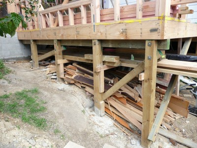

Cimentación superficial, con capacidad lateral [FOSSL]
Cimentaciones que tienen una profundidad menor a 1m y tienen capacidad lateral. Cimentaciones con capacidad lateral incluyen vigas de amarre, muros de mampostería de amarre en la dirección de sus longitudes, incluyen pilotes, muelles en zapatas ampliamente separadas, pilotes en voladizo o arriostrados o losas.

Un ejemplo de cimentación superficial de pilote de madera arriostrado que tiene capacidad lateral.

Un ejemplo de una cimentación superficial de una placa con capacidad lateral.


Ejemplos de pilotes de cimentación de madera arriostrados, Nueva Zelandia (Charleson).